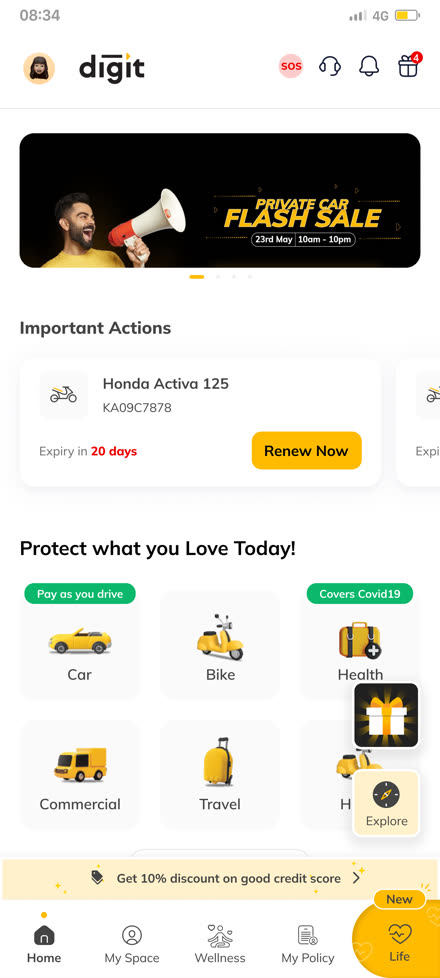
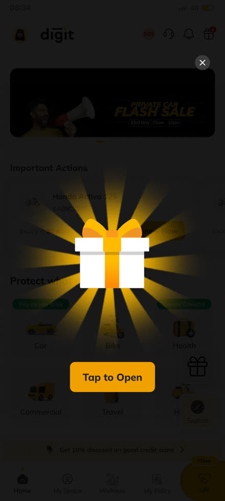
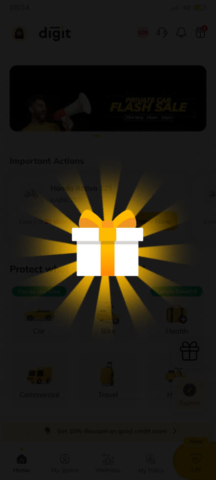
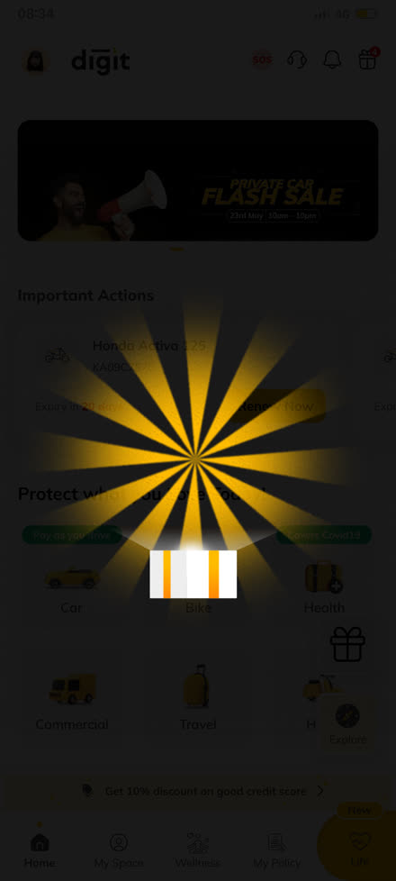
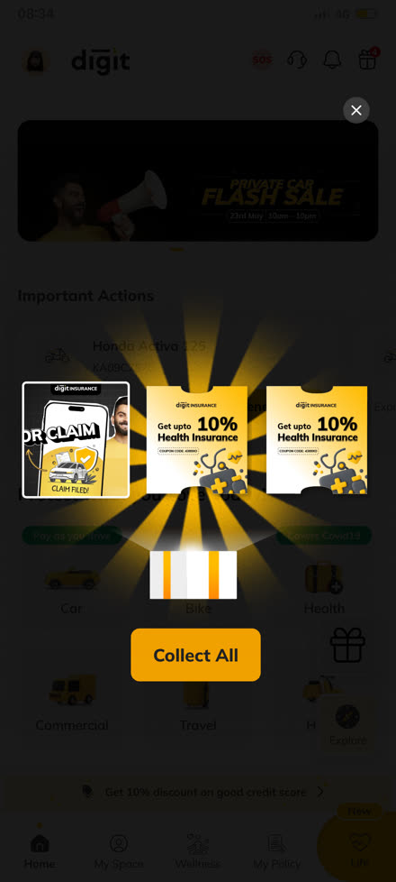
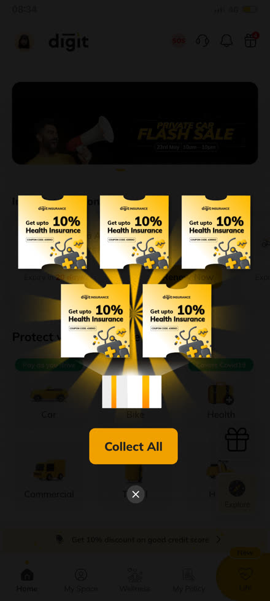

<title>Gamified "Get Rewards" FAB — Case Study</title>
<meta name="viewport" content="width=device-width, initial-scale=1">
<style>
  :root{
    --void:#0B0906;
    --void-2:#151009;
    --void-3:#1F1710;
    --hair:#332A1B;
    --hair-soft:#241C12;
    --gold:#FFC53D;
    --gold-deep:#FFB100;
    --gold-pale:#FFE4A0;
    --cream:#F7EEDC;
    --cream-dim:#C7B89A;
    --cream-faint:#8A7C63;
    --ember:#FF7A45;
    --good:#8FD3A6;
    --font-display: -apple-system, BlinkMacSystemFont, "Segoe UI", "Helvetica Neue", Arial, sans-serif;
    --font-mono: ui-monospace, "SF Mono", "Cascadia Mono", Consolas, monospace;
    --shadow-glow: 0 0 0 1px rgba(255,197,61,0.08), 0 20px 60px rgba(0,0,0,0.55);
  }
  *{box-sizing:border-box;}
  html{scroll-behavior:smooth;}
  html,body{margin:0;padding:0;}
  body{
    background:
      radial-gradient(900px 500px at 85% -10%, color-mix(in srgb, var(--gold) 10%, transparent), transparent 65%),
      radial-gradient(700px 500px at -10% 30%, color-mix(in srgb, var(--ember) 7%, transparent), transparent 65%),
      var(--void);
    color:var(--cream);
    font-family:var(--font-display);
    line-height:1.62;
    -webkit-font-smoothing:antialiased;
  }
  img,video{max-width:100%;display:block;}
  a{color:var(--gold);}
  a:focus-visible, button:focus-visible{outline:2px solid var(--gold);outline-offset:2px;}
  ::selection{background:var(--gold);color:var(--void);}

  /* ---------- top nav ---------- */
  .topnav{
    position:sticky;top:0;z-index:30;
    display:flex;align-items:center;justify-content:space-between;gap:1.5rem;
    padding:1rem 2.2rem;
    background:color-mix(in srgb, var(--void) 78%, transparent);
    backdrop-filter:blur(14px);
    border-bottom:1px solid var(--hair-soft);
  }
  .brand{font-family:var(--font-mono);font-size:13px;letter-spacing:0.06em;color:var(--cream);text-transform:uppercase;white-space:nowrap;}
  .brand b{color:var(--gold);font-weight:700;}
  .navlinks{
    display:flex;gap:1.5rem;overflow-x:auto;scrollbar-width:none;flex:1;min-width:0;
    mask-image:linear-gradient(to right, black calc(100% - 28px), transparent);
    -webkit-mask-image:linear-gradient(to right, black calc(100% - 28px), transparent);
  }
  .navlinks::-webkit-scrollbar{display:none;}
  .navlinks a{
    text-decoration:none;color:var(--cream-faint);font-size:12px;font-weight:600;
    text-transform:uppercase;letter-spacing:0.05em;white-space:nowrap;
    padding-bottom:3px;border-bottom:1.5px solid transparent;transition:color .15s ease, border-color .15s ease;
  }
  .navlinks a:hover{color:var(--gold);border-color:var(--gold);}
  .navlinks a span{color:var(--gold-deep);margin-right:0.4em;font-family:var(--font-mono);}
  .navback{font-size:12px;color:var(--cream-faint);text-decoration:none;white-space:nowrap;flex-shrink:0;}
  .navback:hover{color:var(--gold);}
  @media (max-width:760px){ .brand{display:none;} }

  main{max-width:900px;margin:0 auto;padding:0 1.6rem 6rem;}
  section{padding-top:4.5rem;scroll-margin-top:4.5rem;position:relative;}
  section + section{border-top:1px solid var(--hair-soft);}

  /* sunburst divider — the product's own visual signature, reused as a wayfinding motif */
  .burst-divider{height:64px;margin:0 auto;width:100%;max-width:900px;position:relative;overflow:hidden;opacity:0.5;}
  .burst-divider::before{
    content:'';position:absolute;left:50%;top:-140px;width:360px;height:360px;transform:translateX(-50%);
    background:conic-gradient(from 0deg, transparent 0deg 8deg, color-mix(in srgb, var(--gold) 55%, transparent) 8deg 10deg, transparent 10deg 20deg);
    mask:radial-gradient(circle at center, black 55%, transparent 75%);
  }

  .eyebrow{
    display:inline-flex;align-items:center;gap:0.6rem;font-family:var(--font-mono);font-size:11.5px;
    color:var(--gold-deep);text-transform:uppercase;letter-spacing:0.1em;margin-bottom:1rem;
  }
  .eyebrow .no{
    display:inline-flex;align-items:center;justify-content:center;width:22px;height:22px;border-radius:50%;
    border:1px solid var(--gold-deep);color:var(--gold-deep);font-size:10.5px;
  }

  h1{font-size:clamp(2.2rem,5vw,3.6rem);font-weight:800;letter-spacing:-0.03em;line-height:1.03;margin:0 0 1rem;color:var(--cream);text-wrap:balance;}
  h2{font-size:clamp(1.6rem,2.8vw,2.15rem);font-weight:800;letter-spacing:-0.025em;line-height:1.15;margin:0 0 0.9rem;color:var(--cream);text-wrap:balance;}
  h3{font-size:1.05rem;font-weight:700;letter-spacing:-0.005em;margin:0 0 0.5rem;color:var(--cream);}
  h4{font-size:1rem;font-weight:700;margin:0 0 0.4rem;color:var(--cream);}
  p{margin:0 0 1rem;max-width:66ch;color:var(--cream-dim);}
  p.lede{font-size:1.12rem;color:var(--cream-dim);max-width:56ch;}

  /* ---------- ticket callout — the shape lifted straight from the offer card ---------- */
  .ticket{
    position:relative;background:var(--void-3);border:1px solid var(--hair);border-radius:4px;
    padding:1.5rem 1.6rem;margin:2rem 0;box-shadow:var(--shadow-glow);
  }
  .ticket::before,.ticket::after{
    content:'';position:absolute;top:50%;width:20px;height:20px;background:var(--void);
    border:1px solid var(--hair);border-radius:50%;transform:translateY(-50%);
  }
  .ticket::before{left:-11px;}
  .ticket::after{right:-11px;}
  .ticket .tk-rule{border-top:1.5px dashed var(--hair);margin:1rem 0;}
  .ticket-quote{font-size:1.28rem;font-weight:700;letter-spacing:-0.01em;line-height:1.4;color:var(--gold-pale);margin:0;max-width:52ch;}
  .ticket-quote .mark{color:var(--gold);font-family:var(--font-mono);font-size:0.9rem;display:block;margin-bottom:0.5rem;letter-spacing:0.1em;}

  /* ---------- chips / pills ---------- */
  .pillrow{display:flex;flex-wrap:wrap;gap:0.6rem;margin-top:1.4rem;}
  .pillrow span{
    font-size:12px;color:var(--cream-dim);border:1px solid var(--hair);border-radius:99px;
    padding:0.45rem 0.9rem;background:var(--void-2);
  }
  .pillrow span b{color:var(--gold);font-weight:600;}

  /* ---------- rosette facts ---------- */
  .rosettes{display:flex;flex-wrap:wrap;gap:1.6rem;margin:2.2rem 0 0;}
  .rosette{width:112px;text-align:center;}
  .rosette .ring{
    width:88px;height:88px;border-radius:50%;margin:0 auto 0.6rem;
    background:radial-gradient(circle at 35% 30%, color-mix(in srgb, var(--gold) 30%, var(--void-3)), var(--void-3) 70%);
    border:1px solid var(--hair);display:flex;align-items:center;justify-content:center;
    font-family:var(--font-mono);font-weight:700;color:var(--gold);font-size:0.95rem;
  }
  .rosette .rl{font-size:11px;color:var(--cream-faint);line-height:1.3;}

  /* ---------- problem grid ---------- */
  .duo{display:grid;grid-template-columns:1fr 1fr;gap:1rem;margin-top:1.6rem;}
  @media (max-width:640px){ .duo{grid-template-columns:1fr;} }
  .duo-card{border:1px solid var(--hair);border-radius:10px;padding:1.3rem 1.4rem;background:var(--void-2);}
  .duo-card .dc-no{font-family:var(--font-mono);color:var(--gold-deep);font-size:11px;margin-bottom:0.5rem;}
  .duo-card p{font-size:13.5px;margin:0;}

  /* ---------- flow ---------- */
  .flowstrip{display:flex;flex-wrap:wrap;gap:0;margin:2rem 0;border:1px solid var(--hair);border-radius:12px;overflow:hidden;}
  .flowstrip .fs-node{flex:1 1 140px;padding:1rem 1.1rem;border-right:1px solid var(--hair);position:relative;}
  .flowstrip .fs-node:last-child{border-right:none;}
  .flowstrip .fs-node .fi{font-family:var(--font-mono);font-size:10px;color:var(--gold-deep);}
  .flowstrip .fs-node h5{margin:0.3rem 0 0.2rem;font-size:12.5px;font-weight:700;color:var(--cream);}
  .flowstrip .fs-node p{margin:0;font-size:10.5px;color:var(--cream-faint);}

  /* ---------- principle chips ---------- */
  .prinlist{display:grid;grid-template-columns:repeat(3,1fr);gap:0.7rem;margin-top:1.5rem;}
  @media (max-width:700px){ .prinlist{grid-template-columns:1fr 1fr;} }
  @media (max-width:460px){ .prinlist{grid-template-columns:1fr;} }
  .prin{border:1px solid var(--hair);border-radius:8px;padding:0.85rem 0.95rem;background:var(--void-2);}
  .prin .pn{font-family:var(--font-mono);font-size:10px;color:var(--gold-deep);}
  .prin .pt{font-size:12.5px;font-weight:700;color:var(--cream);margin:0.3rem 0 0.25rem;}
  .prin .pd{font-size:11px;color:var(--cream-faint);}

  /* ---------- hero demo ---------- */
  .hero-demo{display:grid;grid-template-columns:260px minmax(0,1fr);gap:2.2rem;align-items:center;margin-top:2.4rem;}
  @media (max-width:760px){ .hero-demo{grid-template-columns:1fr;} }
  .phone-glow{position:relative;padding:14px;}
  .phone-glow::before{
    content:'';position:absolute;inset:-30px;z-index:0;
    background:radial-gradient(circle at 50% 40%, color-mix(in srgb, var(--gold) 30%, transparent), transparent 68%);
    filter:blur(8px);
  }
  .phone-glow video{position:relative;z-index:1;border-radius:22px;border:1px solid var(--hair);box-shadow:0 20px 70px rgba(0,0,0,0.6);}
  .hd-cap{text-align:center;font-family:var(--font-mono);font-size:11px;color:var(--gold-deep);margin-top:0.9rem;letter-spacing:0.04em;}
  .hd-copy .k{font-family:var(--font-mono);font-size:11px;font-weight:700;color:var(--gold-deep);text-transform:uppercase;letter-spacing:0.08em;margin-bottom:0.6rem;}

  /* ---------- filmstrip screens ---------- */
  .filmstrip{
    display:flex;gap:1rem;overflow-x:auto;padding:1.8rem 0.2rem 1rem;margin:0 -0.2rem;
    scroll-snap-type:x proximity;
  }
  .filmstrip::-webkit-scrollbar{height:6px;}
  .filmstrip::-webkit-scrollbar-thumb{background:var(--hair);border-radius:4px;}
  .film-card{flex:0 0 auto;width:190px;scroll-snap-align:start;}
  .film-card .fc-img{border-radius:14px;overflow:hidden;border:1px solid var(--hair);box-shadow:0 12px 34px rgba(0,0,0,0.5);}
  .film-card img{width:100%;display:block;}
  .film-card .fc-cap{padding:0.6rem 0.1rem 0;}
  .film-card .fc-no{font-family:var(--font-mono);font-size:10px;color:var(--gold-deep);}
  .film-card .fc-name{font-size:12px;font-weight:600;color:var(--cream);margin-top:0.15rem;}
  .filmhint{font-size:11px;color:var(--cream-faint);margin-top:0.6rem;font-family:var(--font-mono);}

  /* ---------- prototyping Q&A ---------- */
  .qalist{margin-top:1.6rem;display:flex;flex-direction:column;gap:0;}
  .qarow{display:grid;grid-template-columns:210px minmax(0,1fr);gap:1.2rem;padding:1rem 0;border-top:1px solid var(--hair-soft);}
  @media (max-width:640px){ .qarow{grid-template-columns:1fr;gap:0.3rem;} }
  .qarow .q{font-size:12.5px;font-weight:700;color:var(--gold-pale);}
  .qarow .a{font-size:13px;color:var(--cream-dim);margin:0;}

  /* ---------- testing method strip ---------- */
  .method-strip{display:flex;flex-wrap:wrap;gap:0.9rem;margin:1.6rem 0 0.4rem;}
  .method-tag{
    display:flex;align-items:center;gap:0.5rem;border:1px solid var(--hair);border-radius:99px;
    padding:0.5rem 1rem 0.5rem 0.6rem;background:var(--void-2);font-size:12px;color:var(--cream-dim);
  }
  .method-tag .dot{width:7px;height:7px;border-radius:50%;background:var(--gold);flex-shrink:0;}

  .evalgrid{display:grid;grid-template-columns:repeat(3,1fr);gap:0.8rem;margin-top:1.6rem;}
  @media (max-width:760px){ .evalgrid{grid-template-columns:1fr 1fr;} }
  @media (max-width:480px){ .evalgrid{grid-template-columns:1fr;} }
  .evalcard{border:1px solid var(--hair);border-radius:10px;padding:1rem 1.1rem;background:var(--void-2);}
  .evalcard .ek{font-family:var(--font-mono);font-size:10.5px;color:var(--gold-deep);text-transform:uppercase;letter-spacing:0.05em;}
  .evalcard p{font-size:12.5px;margin:0.4rem 0 0;color:var(--cream-dim);}

  /* insight rows w/ round badge, no side-border accent */
  .insight{display:flex;gap:1.1rem;margin-top:1.8rem;}
  .insight .badge{
    flex-shrink:0;width:38px;height:38px;border-radius:50%;border:1px solid var(--gold-deep);
    display:flex;align-items:center;justify-content:center;font-family:var(--font-mono);color:var(--gold-deep);font-size:13px;font-weight:700;
  }
  .insight .body h4{margin-bottom:0.35rem;}
  .insight .body p{font-size:13px;margin:0 0 0.5rem;}
  .insight .body .resp{font-size:12.5px;color:var(--cream-faint);background:var(--void-2);border:1px solid var(--hair);border-radius:8px;padding:0.6rem 0.8rem;}
  .insight .body .resp b{color:var(--gold-pale);}

  /* ---------- before/after rows ---------- */
  .stackrows{margin-top:1.6rem;}
  .stackrow{display:grid;grid-template-columns:140px 1fr 1fr;gap:1rem;align-items:center;padding:0.85rem 0;border-top:1px solid var(--hair-soft);font-size:13px;}
  .stackrow.head{font-family:var(--font-mono);font-size:10.5px;text-transform:uppercase;letter-spacing:0.06em;color:var(--cream-faint);border-top:none;}
  @media (max-width:640px){ .stackrow{grid-template-columns:1fr;gap:0.2rem;padding:1rem 0;} .stackrow .lbl{font-weight:700;color:var(--cream);margin-bottom:0.2rem;} }
  .stackrow .lbl{color:var(--cream-faint);font-size:12px;}
  .stackrow .before{color:var(--cream-dim);}
  .stackrow .after{color:var(--gold-pale);}
  .stackrow .before::before{content:'✕ ';color:var(--ember);}
  .stackrow .after::before{content:'✓ ';color:var(--good);}

  /* ---------- component state grid ---------- */
  .statelist{display:grid;grid-template-columns:repeat(4,1fr);gap:0.7rem;margin-top:1.4rem;}
  @media (max-width:700px){ .statelist{grid-template-columns:1fr 1fr;} }
  .statebox{border:1px solid var(--hair);border-radius:8px;padding:0.9rem 1rem;background:var(--void-2);text-align:center;}
  .statebox .sb-t{font-size:12px;font-weight:700;color:var(--gold-pale);}
  .statebox .sb-d{font-size:10.5px;color:var(--cream-faint);margin-top:0.25rem;}

  /* ---------- impact medallions ---------- */
  .impactrow{display:grid;grid-template-columns:1fr 1fr 1fr;gap:1rem;margin-top:1.8rem;}
  @media (max-width:700px){ .impactrow{grid-template-columns:1fr;} }
  .impactcard{border:1px solid var(--hair);border-radius:12px;padding:1.4rem;background:linear-gradient(160deg, var(--void-3), var(--void-2));}
  .impactcard .ik{font-family:var(--font-mono);font-size:10.5px;color:var(--gold-deep);text-transform:uppercase;letter-spacing:0.06em;}
  .impactcard .iv{font-size:2rem;font-weight:800;color:var(--gold);margin:0.4rem 0;letter-spacing:-0.02em;}
  .impactcard p{font-size:12.5px;margin:0;color:var(--cream-dim);}

  .checklist{margin-top:1.3rem;}
  .checkrow{display:flex;gap:0.8rem;align-items:baseline;padding:0.6rem 0;border-top:1px solid var(--hair-soft);font-size:13px;}
  .checkrow .c{color:var(--gold);font-weight:700;flex-shrink:0;}
  .checkrow b{color:var(--cream);font-weight:600;}
  .checkrow span.note{color:var(--cream-faint);font-size:11.5px;}

  .closing{margin-top:2.6rem;padding-top:2rem;border-top:1px solid var(--hair-soft);}

  footer{max-width:900px;margin:3rem auto 0;padding:1.6rem 1.6rem 0;font-size:12px;color:var(--cream-faint);
    display:flex;justify-content:space-between;flex-wrap:wrap;gap:0.5rem;border-top:1px solid var(--hair-soft);}
  footer a{color:var(--gold-deep);text-decoration:none;}
</style>

<nav class="topnav">
  <div class="brand"><b>Get</b>Rewards — Case Study</div>
  <div class="navlinks">
    <a href="#overview"><span>01</span>Overview</a>
    <a href="#problem"><span>02</span>Problem</a>
    <a href="#entry"><span>03</span>Entry</a>
    <a href="#unboxing"><span>04</span>Unboxing</a>
    <a href="#prototyping"><span>05</span>Prototyping</a>
    <a href="#testing"><span>06</span>User Testing</a>
    <a href="#wellness"><span>07</span>Wellness Nav</a>
    <a href="#impact"><span>08</span>Impact</a>
  </div>
  <a class="navback" href="index.html#work">← Portfolio</a>
</nav>

<main>

  <!-- ================= 01 OVERVIEW ================= -->
  <section id="overview" style="border-top:none;padding-top:3rem;">
    <div class="eyebrow"><span class="no">01</span>Overview</div>
    <h1>Designing Reward Discovery Through Interaction</h1>
    <p class="lede">Digit already offered rewards and wellness benefits inside the app. The challenge wasn't the value of these benefits — it was whether users could discover them at the right moment.</p>

    <div class="rosettes">
      <div class="rosette"><div class="ring">+6.5%</div><div class="rl">Offer redemption</div></div>
      <div class="rosette"><div class="ring">+2.3%</div><div class="rl">Wellness opt-ins</div></div>
      <div class="rosette"><div class="ring">8</div><div class="rl">Component states</div></div>
      <div class="rosette"><div class="ring">7</div><div class="rl">Real screens shipped</div></div>
      <div class="rosette"><div class="ring">2</div><div class="rl">Discoverability problems solved</div></div>
      <div class="rosette"><div class="ring">Live</div><div class="rl">Shipped in production</div></div>
    </div>

    <div class="pillrow">
      <span><b>Role</b> Product &amp; UI Design, end to end</span>
      <span><b>Scope</b> Entry point → unboxing → redemption</span>
      <span><b>Method</b> Figma prototyping + moderated usability testing</span>
      <span><b>Status</b> Shipped, measured post-launch</span>
    </div>

    <div class="hero-demo">
      <div>
        <div class="phone-glow">
          <video src="assets/rewards-fab/rewards-fab-demo.mp4" poster="assets/rewards-fab/rewards-fab-poster.jpg" autoplay loop muted playsinline></video>
        </div>
        <div class="hd-cap">TAP → REVEAL → EXPLORE → REDEEM &nbsp;·&nbsp; looping</div>
      </div>
      <div class="hd-copy">
        <div class="k">Product in action</div>
        <p>Screen capture of the shipped flow, straight from the live Digit app — the Get Rewards FAB, the gift-box unboxing sequence, the offer burst, and the redemption card.</p>
        <div class="ticket">
          <p class="ticket-quote"><span class="mark">Design hypothesis</span>Reduce discovery friction by making important actions visually prominent, immediately understandable and rewarding to interact with.</p>
        </div>
      </div>
    </div>
  </section>

  <div class="burst-divider" aria-hidden="true"></div>

  <!-- ================= 02 PROBLEM ================= -->
  <section id="problem">
    <div class="eyebrow"><span class="no">02</span>Problem</div>
    <h2>Rewards existed. Nothing pointed at them.</h2>
    <p class="lede">The original rewards experience depended on users intentionally navigating toward offers — a weak position for a secondary feature competing with insurance actions, policy info, and renewals on the home screen.</p>

    <div class="duo">
      <div class="duo-card"><div class="dc-no">01 — No interaction cue</div><p>Offers existed within the ecosystem, but there was no strong interaction cue encouraging users to explore them.</p></div>
      <div class="duo-card"><div class="dc-no">02 — Wellness benefits missed</div><p>The category navigation relied heavily on a horizontally scrollable pattern, making certain benefits easy to overlook.</p></div>
    </div>

    <p style="margin-top:1.8rem;font-size:13.5px;color:var(--cream-faint);">The UI needed to answer three questions almost instantly:</p>
    <div class="pillrow">
      <span><b>01</b> Is there something here for me?</span>
      <span><b>02</b> Can I interact with it?</span>
      <span><b>03</b> What happens if I tap it?</span>
    </div>
  </section>

  <!-- ================= 03 ENTRY POINT ================= -->
  <section id="entry">
    <div class="eyebrow"><span class="no">03</span>Entry Point</div>
    <h2>From passive offer visibility to an interactive FAB</h2>
    <p class="lede">A dedicated Get Rewards floating action button, placed within the app's persistent chrome — a high-salience entry point without restructuring the home screen's information architecture.</p>

    <p style="font-size:13.5px;color:var(--cream-faint);">Rather than jumping straight into another page, the interaction uses progressive disclosure:</p>
    <div class="flowstrip">
      <div class="fs-node"><div class="fi">i</div><h5>Idle</h5><p>FAB at rest</p></div>
      <div class="fs-node"><div class="fi">ii</div><h5>Reward cue</h5><p>Visual pulse</p></div>
      <div class="fs-node"><div class="fi">iii</div><h5>Tap</h5><p>Modal focus</p></div>
      <div class="fs-node"><div class="fi">iv</div><h5>Unboxing</h5><p>Gift opens</p></div>
      <div class="fs-node"><div class="fi">v</div><h5>Reveal</h5><p>Cards fan out</p></div>
      <div class="fs-node"><div class="fi">vi</div><h5>Redeem</h5><p>Primary CTA</p></div>
    </div>

    <h3 style="margin-top:1.6rem;">UI principles used</h3>
    <div class="prinlist">
      <div class="prin"><div class="pn">01</div><div class="pt">Visual salience</div><div class="pd">Discoverable entry point</div></div>
      <div class="prin"><div class="pn">02</div><div class="pt">Clear affordance</div><div class="pd">Communicates tapability</div></div>
      <div class="prin"><div class="pn">03</div><div class="pt">Progressive disclosure</div><div class="pd">Not all offers at once</div></div>
      <div class="prin"><div class="pn">04</div><div class="pt">Context-preserving overlay</div><div class="pd">No page transition</div></div>
      <div class="prin"><div class="pn">05</div><div class="pt">Motion hierarchy</div><div class="pd">Trigger → reward attention</div></div>
      <div class="prin"><div class="pn">06</div><div class="pt">Strong CTA hierarchy</div><div class="pd">Redeem Now as the close</div></div>
    </div>
  </section>

  <div class="burst-divider" aria-hidden="true"></div>

  <!-- ================= 04 UNBOXING ================= -->
  <section id="unboxing">
    <div class="eyebrow"><span class="no">04</span>Unboxing</div>
    <h2>Making discovery feel rewarding before the reward itself</h2>
    <p class="lede">A short sequence of functional UI states, not a decorative animation. On tap, the interface dims into a modal focus state while the reward object becomes the visual hero — seven real screens from the shipped flow, below.</p>

    <div class="filmstrip">
      <div class="film-card"><div class="fc-img"></div><div class="fc-cap"><div class="fc-no">i · Idle</div><div class="fc-name">Home, gift FAB at rest</div></div></div>
      <div class="film-card"><div class="fc-img"></div><div class="fc-cap"><div class="fc-no">ii · Tap</div><div class="fc-name">Closed gift, modal focus</div></div></div>
      <div class="film-card"><div class="fc-img"></div><div class="fc-cap"><div class="fc-no">iii · Press</div><div class="fc-name">Glow intensifies</div></div></div>
      <div class="film-card"><div class="fc-img"></div><div class="fc-cap"><div class="fc-no">iv · Burst</div><div class="fc-name">Opening transition</div></div></div>
      <div class="film-card"><div class="fc-img"></div><div class="fc-cap"><div class="fc-no">v · Reveal</div><div class="fc-name">Cards fan out, Collect All</div></div></div>
      <div class="film-card"><div class="fc-img"></div><div class="fc-cap"><div class="fc-no">vi · Scale</div><div class="fc-name">Same layout, five offers</div></div></div>
      <div class="film-card"><div class="fc-img"></div><div class="fc-cap"><div class="fc-no">vii · Browse</div><div class="fc-name">Carousel, one offer at a time</div></div></div>
    </div>
    <div class="filmhint">← scroll →</div>

    <p style="margin-top:1.8rem;font-size:13.5px;color:var(--cream-dim);">Each state was prototyped in Figma to evaluate transition timing, component positioning, visual hierarchy, CTA visibility, perceived tap feedback, animation pacing, offer-card readability, exit behaviour, and continuity between states. The animation works as functional feedback — confirming the user's action triggered a new state — not motion added for visual appeal alone.</p>
  </section>

  <!-- ================= 05 PROTOTYPING ================= -->
  <section id="prototyping">
    <div class="eyebrow"><span class="no">05</span>Prototyping</div>
    <h2>Five questions the interaction model had to answer</h2>
    <p class="lede">The experience went through multiple interaction explorations in Figma before arriving at the final flow.</p>

    <div class="qalist">
      <div class="qarow"><div class="q">Trigger positioning</div><p class="a">How visible could the reward affordance become without competing with core insurance actions?</p></div>
      <div class="qarow"><div class="q">Side-card behaviour</div><p class="a">Could upcoming offers create curiosity without interrupting the user?</p></div>
      <div class="qarow"><div class="q">Overlay vs. page</div><p class="a">Retain the homepage as contextual background, or open a new page entirely?</p></div>
      <div class="qarow"><div class="q">Reveal sequencing</div><p class="a">At what stage should users see the reward vs. the redemption action?</p></div>
      <div class="qarow"><div class="q">Offer browsing</div><p class="a">How could multiple offers stay accessible without a dense overlay — see screens vi–vii above.</p></div>
    </div>

    <div class="ticket" style="margin-top:2rem;">
      <p style="margin:0;font-size:13.5px;color:var(--cream);"><b style="color:var(--gold-pale);">Final approach —</b> retain the homepage underneath the interaction, use an overlay-based flow to minimise context switching. The reward experience reads as an extension of the app, not a disconnected promotional surface.</p>
    </div>
  </section>

  <div class="burst-divider" aria-hidden="true"></div>

  <!-- ================= 06 USER TESTING ================= -->
  <section id="testing">
    <div class="eyebrow"><span class="no">06</span>User Testing</div>
    <h2>Testing behaviour, not visual preference</h2>
    <p class="lede">Not "do users like the animation?" — but "do users notice the entry point, understand what it represents, and successfully reach an offer?"</p>

    <div class="method-strip">
      <div class="method-tag"><span class="dot"></span>Task-based usability walkthroughs</div>
      <div class="method-tag"><span class="dot"></span>Moderated navigation review</div>
      <div class="method-tag"><span class="dot"></span>No instruction given beforehand</div>
      <div class="method-tag"><span class="dot"></span>Comprehension over preference</div>
    </div>

    <div class="evalgrid">
      <div class="evalcard"><div class="ek">Discoverability</div><p>Could users identify the rewards entry point from the homepage?</p></div>
      <div class="evalcard"><div class="ek">Comprehension</div><p>Did the gift icon read as actionable, not decorative?</p></div>
      <div class="evalcard"><div class="ek">Predictability</div><p>After tapping, did users understand what came next?</p></div>
      <div class="evalcard"><div class="ek">Offer clarity</div><p>Could users tell the reward reveal apart from the final redeem action?</p></div>
      <div class="evalcard"><div class="ek">Recovery</div><p>Could users dismiss and return to the homepage without confusion?</p></div>
      <div class="evalcard"><div class="ek">Efficiency</div><p>How many taps between discovering the feature and reaching the offer?</p></div>
    </div>

    <h3 style="margin-top:2.6rem;">What user behaviour revealed</h3>

    <div class="insight">
      <div class="badge">01</div>
      <div class="body">
        <h4>Rewards needed a stronger entry signal.</h4>
        <p>Users opening the app for an insurance task rarely went looking for a rewards section on their own.</p>
        <div class="resp"><b>Design response —</b> bring the entry point into the user's natural navigation path through a persistent floating action.</div>
      </div>
    </div>
    <div class="insight">
      <div class="badge">02</div>
      <div class="body">
        <h4>The interaction needed immediate feedback.</h4>
        <p>A promotional icon alone could easily read as decorative content.</p>
        <div class="resp"><b>Design response —</b> use state change, backdrop dimming, scale and motion feedback immediately after tap to signal an interactive reward flow.</div>
      </div>
    </div>
    <div class="insight">
      <div class="badge">03</div>
      <div class="body">
        <h4>The offer itself needed to appear quickly.</h4>
        <p>Too much animation before showing value risked increasing perceived effort.</p>
        <div class="resp"><b>Design response —</b> keep the sequence short; make the offer card the conclusion of the motion, not an extension after the reward is revealed.</div>
      </div>
    </div>
  </section>

  <!-- ================= 07 WELLNESS NAV ================= -->
  <section id="wellness">
    <div class="eyebrow"><span class="no">07</span>A Second Discoverability Problem</div>
    <h2>Improving Wellness navigation</h2>
    <p class="lede">The rewards work exposed a broader pattern: valuable features lose value when the navigation model makes them hard to find. Wellness subscriptions relied on a horizontal category scroller — compact, but with several categories sitting outside the immediate viewport, creating weak information scent.</p>

    <div class="stackrows">
      <div class="stackrow head"><div></div><div>Before</div><div>After</div></div>
      <div class="stackrow"><div class="lbl">Category access</div><div class="before">Horizontal scroller, hidden categories</div><div class="after">High-visibility explicit tab architecture</div></div>
      <div class="stackrow"><div class="lbl">Active state</div><div class="before">Weak differentiation, selected vs. inactive</div><div class="after">Clear active vs. inactive feedback</div></div>
      <div class="stackrow"><div class="lbl">Discovery</div><div class="before">Implicit swipe gesture required</div><div class="after">Choices exposed, not hidden behind a gesture</div></div>
      <div class="stackrow"><div class="lbl">Switching</div><div class="before">Multi-swipe to reach a category</div><div class="after">Direct tap between benefit categories</div></div>
    </div>

    <div class="ticket" style="margin-top:2rem;">
      <p class="ticket-quote" style="font-size:1.1rem;"><span class="mark">Principle</span>Make the system expose available choices instead of requiring users to discover that those choices exist.</p>
    </div>
  </section>

  <div class="burst-divider" aria-hidden="true"></div>

  <!-- ================= 08 IMPACT ================= -->
  <section id="impact">
    <div class="eyebrow"><span class="no">08</span>Impact &amp; System</div>
    <h2>Before → Behaviour → After</h2>

    <div class="stackrows">
      <div class="stackrow" style="grid-template-columns:1fr;"><div><b style="color:var(--cream);">Before —</b> <span style="color:var(--cream-dim);">reward and wellness benefits existed, but discovery depended heavily on intentional navigation.</span></div></div>
      <div class="stackrow" style="grid-template-columns:1fr;"><div><b style="color:var(--cream);">User behaviour —</b> <span style="color:var(--cream-dim);">users prioritised core insurance tasks and were less likely to explore secondary features without strong visual or navigational cues.</span></div></div>
      <div class="stackrow" style="grid-template-columns:1fr;"><div><b style="color:var(--gold-pale);">After —</b> <span style="color:var(--cream-dim);">clearer entry points, stronger interaction feedback, and shorter pathways to high-value benefits.</span></div></div>
    </div>

    <h3 style="margin-top:2.4rem;">The interaction, as a component system</h3>
    <p style="font-size:13px;color:var(--cream-faint);max-width:60ch;">Defined at the component-state level to keep visual design, prototype behaviour, and the shipped product consistent.</p>
    <div class="statelist">
      <div class="statebox"><div class="sb-t">FAB / Idle</div><div class="sb-d">Default discovery state</div></div>
      <div class="statebox"><div class="sb-t">FAB / Attention</div><div class="sb-d">Cue for available rewards</div></div>
      <div class="statebox"><div class="sb-t">Overlay / Closed</div><div class="sb-d">Interaction confirmation</div></div>
      <div class="statebox"><div class="sb-t">Overlay / Opening</div><div class="sb-d">Transition state</div></div>
      <div class="statebox"><div class="sb-t">Overlay / Reveal</div><div class="sb-d">Value communication</div></div>
      <div class="statebox"><div class="sb-t">Carousel / Active</div><div class="sb-d">Browsing state</div></div>
      <div class="statebox"><div class="sb-t">CTA / Redeem Now</div><div class="sb-d">Primary conversion</div></div>
      <div class="statebox"><div class="sb-t">Dismiss / Return</div><div class="sb-d">Recovery state</div></div>
    </div>

    <h3 style="margin-top:2.4rem;">Measured outcome</h3>
    <div class="impactrow">
      <div class="impactcard"><div class="ik">Offer redemption</div><div class="iv">+6.5%</div><p>Following the gamified reward discovery experience.</p></div>
      <div class="impactcard"><div class="ik">Wellness opt-ins</div><div class="iv">+2.3%</div><p>After replacing the low-visibility scroller with explicit tabs.</p></div>
      <div class="impactcard"><div class="ik">Principle validated</div><div class="iv" style="font-size:1.15rem;">Path &gt; content</div><p>Engagement doesn't always need more content — sometimes the bigger opportunity is a better path to value that already exists.</p></div>
    </div>

    <h3 style="margin-top:2.4rem;">My contribution</h3>
    <div class="checklist">
      <div class="checkrow"><span class="c">✓</span><b>Product problem framing &amp; flow analysis</b><span class="note">rewards + wellness</span></div>
      <div class="checkrow"><span class="c">✓</span><b>Interaction hypothesis &amp; information architecture</b></div>
      <div class="checkrow"><span class="c">✓</span><b>UI exploration, interaction &amp; motion design</b></div>
      <div class="checkrow"><span class="c">✓</span><b>Component and state design, Figma prototyping</b></div>
      <div class="checkrow"><span class="c">✓</span><b>Usability validation &amp; iteration on user behaviour</b><span class="note">§06</span></div>
      <div class="checkrow"><span class="c">✓</span><b>Developer handoff &amp; post-launch performance review</b></div>
    </div>

    <div class="closing">
      <div class="ticket">
        <p class="ticket-quote"><span class="mark">Final takeaway</span>This project shifted my approach from designing individual screens to thinking in behavioural systems — where attention was being lost, what interaction users expected, and how UI behaviour could influence product adoption.</p>
      </div>
    </div>
  </section>

  <footer>
    <span>Gamified "Get Rewards" FAB — Digit Insurance · Motion, shipped</span>
    <span><a href="index.html#work">Dnyaneshwari Mandape — Portfolio</a></span>
  </footer>

</main>
